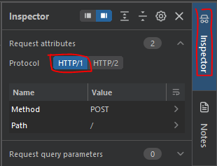
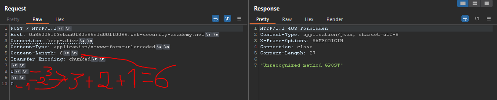

PortSwigger - HTTP request smuggling, basic CL.TE vulnerability
What is an HTTP Request Smuggling attack?
It allows manipulating HTTP request headers in a malicious way in order to trick the server, it is possible to make the server interpret them incorrectly. Classic request-smuggling attacks involve using the "Content-Length" and "Transfer-Encoding" headers in an HTTP/1 request, manipulating them so that the front-end and back-end servers process the request differently. Our payload will depend on the behavior of the front-end and back-end server.What is CL.TE?
"CL.TE" refers to the combination of the "Content-Length" and "Transfer-Encoding" headers in the context of HTTP requests. In this scenario, the front-end prioritizes the "Content-Length" header, while the back-end prioritizes the "Transfer-Encoding" header. In other words, the Content-Length (CL) is placed first on the front-end, followed by the back-end, and then the Transfer-Encoding (TE) is handled.
Solving the lab.
Generate only one laboratory; afterwards, you should get this payload as a result:
POST / HTTP/1.1
Host: YOUR-LAB-ID.web-security-academy.net
Connection: keep-alive
Content-Type: application/x-www-form-urlencoded
Content-Length: 6
Transfer-Encoding: chunked
0
G
First of all, make sure that the protocol is "HTTP/1".

Now, let us proceed to explain the meaning of each line.
The main line of our code is "POST / HTTP/1.1". But what is it for and why do we choose this method instead of others? By specifying "POST", we indicate that the request will be sent using this particular method. This choice is because the POST method allows for more manipulation, especially with respect to the interpretation of request bodies and headers associated with data length and encoding.
By using "/", we indicate that we want to make a request to the root of the web resource. And by adding "HTTP/1.1", we establish that we want to use version 1.1 of the HTTP protocol.
POST / HTTP/1.1
With the "Host" header I specify the domain of the server.
Host: YOUR-LAB-ID.web-security-academy.net
Although the "Connection: keep-alive" header is not strictly necessary, it helps keep an HTTP connection open. This makes it possible to reuse that connection for future requests, which can result in improved efficiency and reduced latency in web applications.
Connection: keep-alive
With this, I am indicating that the data is encrypted.
Content-Type: application/x-www-form-urlencoded
Why is the value of "Content-Length" 6? "6" was used in the BurpSuite solution. In the comments section, I found someone claiming that it was the number of "0" to "G"(including "0" and "G").
Content-Length: 8
With the statement "Transfer-Encoding: chunked", I am indicating that the request is fragmented using the "chunked" format, in which the data is divided into fragments or "chunks".
Transfer-Encoding: chunked
Why use the number "0"? By using the number "0", we are indicating that after the blank line there are no more data fragments in the message body.
Why do we include the letter "G"? Actually, this is not crucial at all; we could simply use A, B, C, D, E, etc. Two letters could also be used as "GO", but the value of "Content-Length" would now have to be 7, since we have added one more letter.
Do you have any questions or experience any problems trying to solve the machine? Contact me on Discord or just talk to me for a chat! I'm available to chat :).
FisMatHack#3733
Thanks for reading :)
Laboratory:
https://portswigger.net/web-security/request-smuggling/lab-basic-cl-te